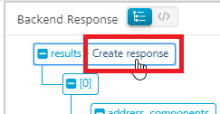

User Guide: Integration > Configure the Integration Service > Open API (Swagger) Adapter
OpenAPI (Swagger) Adapter
The OpenAPI Specification (formerly: Swagger specification) is a framework that is used to define interfaces, with which you can design, build, document, and consume REST APIs.
To configure an OpenAPI (Swagger) service in Volt MX Foundry, you need a JSON or a YAML file (with any dependent files) that contains specifications for the required APIs. The service retrieves the metadata from the imported JSON or YAML files and displays the APIs.
From V9 ServicePack 2, Volt MX Foundry supports OpenAPI 3.0. For more information about OpenAPI 3.0, you can refer to the following articles:
Configuring an OpenAPI (Swagger) End-point Adapter
To configure a OpenAPI (Swagger) adapter in Integration Service Definition tab, follow these steps:
- On the Integration Service Definition page, from the Service Type list, select OpenAPI (Swagger).
-
Configure the service definition parameters. For more information, refer to the following sections.
Parameter Description Name Specifies the name that Foundry uses to identify the service on the console. Version Specifies the version number of the service. The version number ranges from 1.0 to 999.99.If you are creating a new service, the version number is 1.0 by default, and it cannot be changed. Description Specifies the description of the service that is displayed on the console.
Connection Parameters
| Parameter | Description |
|---|---|
| Swagger File | Specifies the JSON,or YAML file that contains the required API specifications. You can also upload a zip file that contains the JSON or YAML file.To upload an OpenAPI specification file, click Upload, and then select a file from your local system.After you upload a file, Foundry displays additional parameters based on the OpenAPI spec version that is mentioned in the file. |
#### Connection Parameters for Swagger 2.0
| Parameter | Description |
|---|---|
| Host URL | Specifies the domain name or the IP address of the server that hosts the APIs.For example: api.example.com or 93.184.216.34:8089 |
| Base Path | Specifies the path of the API relative to the host root. It must start with a forward slash (/).For example: /v2 or /api/v2 |
#### Connection Parameters for OpenAPI 3.0
| Parameter | Description |
|---|---|
| Server URL | Specifies the URL of the server that hosts the APIs. The default URL is the first Server URL in the specification file.For information about how Foundry parses the URLs, refer to the Miscellaneous section.For example: https://subdomain.site.com/version |
| Server Description | Specifies the description for the server that is specified by the URL.For example: Development Server |
Authentication
| Parameter | Description |
|---|---|
| Use Existing Identity Provider | Specifies the identity provider that you want to use to authenticate users for the service.You can select any Identity Service that is created on the VoltMX Foundry cloud.For information about creating an Identity Service, refer to Configure Identity Service. |
Advanced
| Field | Description |
|---|---|
| Custom code | Specifies any custom JAR files that you want to associate with the service.To associate a JAR file with the service, follow either of the following steps.From the Select Existing JAR list, select a JAR file from the Volt MX Foundry cloudClick Upload New, and then select a JAR file from the file explorer> Note: For on-premises instances of Foundry, make sure that the JAR file that is built on the same JDK version that is used to install the Foundry Integration. |
| API Throttling | Specifies whether Foundry must limit the number of request calls in a minute.To use API Throttling, follow these steps. In the Total Rate Limit box, type a required value. This limits the total number of requests that are processed by the service. In the Rate Limit Per IP box, type a required value. This limits the number of requests based on the IP Address of the request. You can also override throttling from the Volt MX Foundry App Services Console. For more information, refer to Override API Throttling Configuration. |
-
After you configure all the parameters, click SAVE.
Note: If you want to add operations to the service, click SAVE AND ADD OPERATIONS.
Creating Operations for OpenAPI (Swagger)
After you create a service, you can view the existing operations and also create operations on the Operations List tab. For an OpenAPI endpoint, the operations are the paths that are defined in the Swagger file, for example: addPet or updatePet.
To create an operation, follow these steps:
- From the Service Definition page, switch to the Operations List tab.
Alternatively, click the plus (+) icon on the left pane, and then click Add New Operation. -
On the Operations List tab, from the drop-down list, select the operations that you want to add to the service.
When you select a path (operation), all the corresponding fields of the operation are populated.

-
After you select the operations, click ADD OPERATION. Foundry adds the selected operations to the Operations List tab.

-
Under Configured Operations, click an operation to view the details of the operation.

-
Foundry displays the selected operation in the edit mode. You can configure the parameters to update the operation. For more information, refer to the following table.
Field Description Name Specifies the name that Foundry uses to identify the operation on the console. Operation Security Level Specifies the authentication that is required to invoke the operation. Contains the following options: Authenticated App User – It restricts the access to clients who have successfully authenticated using an Identity Service associated with the app. Anonymous App User – It allows the access from trusted clients that have the required App Key and App Secret. Authentication through an Identity Service is not required. Public – It allows any client to invoke this operation without any authentication. This setting does not provide any security to invoke this operation and you should avoid this authentication type if possible. Private - It blocks the access to this operation from any external client. It allows invocation either from an Orchestration/Object Service, or from the custom code in the same run-time environment. Description Specifies the description of the service that is displayed on the console. -
Configure the parameters in the Advanced section based on your requirement. For more information, refer to the following table.
Advanced
| Custom Code Invocation | You can add pre and post processing logic to services to modify the request inputs. When you test, the services details of various stages in the service execution are presented to you for better debugging. All options in the Advanced section are optional. For more details, refer to Preprocessor and Postprocessor. |
| Additional Configuration Properties | Additional Configuration Properties allows you to configure service call time out cache response. For information on different types of configuration properties, refer Properties. |
| Front-end API | Front-end API allows you map your endpoint (or) backend URL of an operation to a front-end URL. For detailed information, refer Custom Front-end URL. |
| Server Events | Using Server Events you can configure this service to trigger or process server side events. For detailed information, refer Server Events. |
- After you configure the required parameters, click SAVE.
Configuring Request Parameters
The request input parameters are picked from the uploaded OpenAPI specification file. Any changes that are made to the parameters from the console are ignored.
Important: Make sure that the input parameters are
form-url-encoded.
To create a new parameter on the Request Input tab, follow these steps:
- On the Body tab, click Add Parameter. A new row is added to the table of parameters.
-
Configure the fields (columns) for the input parameter. For more information, refer to the following table.
Field Description Name Specifies a unique identifier for the parameter. The name is the key of the parameter in the request. VALUE Specifies the source of the value of the parameter. Contains the following options.requestThe value is picked from the configuration of the request parameter. If you select request as the source, you need to configure the TEST VALUE and DEFAULT VALUE fields.sessionThe value is picked from the session context. If you select session as the source, the TEST VALUE and DEFAULT VALUE fields are disabled.constantThe value is a constant that is defined on the Foundry console. If you select constant as the source, you need to type a value for the parameter.identityThe value is picked from the response that is sent by the specified identity provider. If you select identity as the source, you need to configure the provider, attribute, and value. For example: sampleAuth.profile.userIDTEST VALUE Specifies the value of the parameter that is used while testing the service. DEFAULT VALUE Specifies the value of the parameter that is used if the test value is empty. DATA TYPE Specifies the data type of the parameter. Contains the following options:stringA combination of alpha-numeric and special characters. Supports all formats (including UTF-8 and UTF-16) with no maximum size limit.booleanA value that can be true or false.numberAn integer or a floating point number.dateA value that contains the day, month, year, and time.collectionA set of multiple records.recordA set of multiple objects.> Note: The binary data type is not supported for operations in OpenAPI (Swagger). Record ID Specifies the ID of the record that contains the parameter. This field is applicable for nested payloads. Collection ID Specifies the ID of the collection that contains the parameter. This field is applicable for nested payloads. Description Specifies the description for the request parameter. -
After you configure all the parameters, you can validate the details by testing the service operation. For more information, refer to Test a Service Operation.
Configuring Response Parameters
You can view the details (such as name, scope, and data type) for the response parameters on the Response Output tab.
The Restrict Parameters to OpenAPI definition check box is selected by default. The check box specifies whether parameters are picked from the OpenAPI definition file or the Foundry console configuration.
To create a parameter based on the back-end response, follow these steps:
- Clear the Restrict Parameters to OpenAPI definition check box.
- From the Select Environment list, select a run-time environment, and then click Save and Fetch Response.
The back-end response of the service appears in the Test window. The Backend Response pane displays the nodes of the response in a Tree view. - Point to the node that you want to add to the response output parameters, and then click Create response.

A new row is created on the Response Output tab and the details of the selected node are added to it.
To create a parameter manually, follow these steps:
- Clear the Restrict Parameters to OpenAPI definition check box.
- Click Add Parameter. A new row is added to the parameters table.
-
Configure the fields for the parameters. For more information, refer to the following table.
Field Description Name Specifies a unique identifier for the parameter. The name is the key of the parameter in the response. Scope Specifies the scope at which the parameter is available. Contains the following options.responseThe parameter is available in the response.sessionThe parameter is available throughout the user session.> Note: If the parameters inside a record are defined as the session, the session scope is not reflected for the parameters. DATA TYPE Specifies the data type of the parameter. Contains the following options:stringA combination of alpha-numeric and special characters. Supports all formats (including UTF-8 and UTF-16) with no maximum size limit.booleanA value that can be true or false.numberAn integer or a floating point number.dateA value that contains the day, month, year, and time.collectionA set of multiple records.recordA set of multiple objects.> Note: The binary data type is not supported for operations in OpenAPI (Swagger). Record ID Specifies the ID of the record that contains the parameter. This field is applicable for nested payloads. Collection ID Specifies the ID of the collection that contains the parameter. This field is applicable for nested payloads. Description Specifies the description for the request parameter. -
After you configure all the parameters, click SAVE OPERATION.
Note: If you want to test the operation, select a run-time environment from the drop-down list, and then click SAVE AND FETCH RESPONSE.
Note: You can view the service in the Data Panel feature of Volt MX Iris. By using the Data Panel, you can link back-end data services to your application UI elements seamlessly with low-code to no code. For more information on Data Panel, click here.
Testing the Operation
After you create an operation and configure the request and response parameters, you can test the operation and validate the details that you configured.
To test an operation, select an environment from the Select Environment list, and then click SAVE AND FETCH RESPONSE. The result of the operation appears. For more details, refer Test a Service Operation.
Note: For Post or Put methods that contain nested payloads, you cannot test the service from the Volt MX Foundry Console. You can only send a request from the App Services Console, or from Postman.
Miscellaneous
Swagger 2.0 in Volt MX Foundry
- If the Swagger file does not specify a scheme,
HTTPSis picked by default. If the file specifies bothHTTPandHTTPSschemes,HTTPis picked.
OpenAPI 3.0 in Foundry V9 ServicePack 2
- With the OpenAPI 3.0 Specification, you can add multiple URLs to your definition and also include parameters in the URL. For more information, refer to A Visual Guide to What's New in Swagger 3.0.
- While creating a service for OpenAPI 3.0 in Volt MX Foundry V9 ServicePack 2, you can select only one URL as the Server URL. If your specification file contains multiple URLs, Foundry picks the first URL by default.
- You can change the URL before you publish the service to the run time by reconfiguring the service before a publish. For more information, refer to Service Reconfiguration.
- Parameters in the URL are not supported. Make sure that you add static server URLs to your specification file.
- Extension data is not supported as Foundry parses only one specification file. If your specification file contains references to any external files, the console displays an error.
For example, if your file contains the following code snippet, the console displays an error:
{
"$ref": "PayInOutExtension.json#/components/schemas/customFields"
}
- The trace HTTP method is not supported and the APIs that use the trace method are ignored.
APIs that use other HTTP methods are parsed by Foundry to create operations. - If the HTTP response code is not 200, the console displays the response from the back-end server as is.
- OpenID Connect (OIDC) is not supported for authentication.
- Callbacks, which are used to define Webhooks, are not supported. Links, which are used to define the output one operation as input for another operation, are not supported. Make sure that you remove Callbacks and Links from your OpenAPI 3.0 spec before you upload it to Foundry.
- Serialization of parameters, which includes style (defines the delimiter for multiple parameters) and explode (specifies whether objects of an array are generated as separate parameters), is not supported.
- Foundry does not parse or validate examples from the specification file.